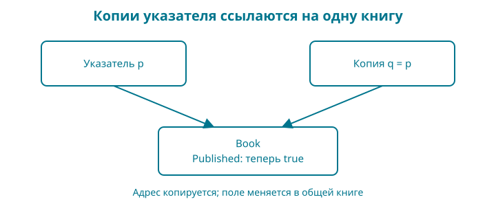

8. Книга как значение: структуры, методы и указатели
Название, цена и признак публикации относятся к одной книге. Если хранить их в отдельных переменных или параллельных словарях, легко перепутать, что к чему относится. Объединим данные и сохраним уже написанные правила.
Контрольная точка: examples/08-books. В ней pricing.go содержит расчёт скидки из главы 5, а title.go — проверку названия из главы 6. Их поведение осталось прежним и проверяется теми же тестами.
Набираете сами: в новой папке нужны ваш go.mod, main.go, book.go, pricing.go, title.go и тесты book_test.go, pricing_test.go, title_test.go. Готовые файлы есть в контрольной точке. Из главы 5 переносите только функцию расчёта и её тесты (тестовый файл здесь назван pricing_test.go), а не вторую функцию main. Словарь из главы 7 остаётся учебным опытом; этот пример пока показывает одну карточку Book, не полный каталог структур.
Образ: карточка книги и записанный адрес
На карточке книги стоят название, цена и отметка о публикации. Сделайте её копию и исправьте название на копии. Первая карточка сохранит прежний текст. Для нашей структуры Book с её нынешними полями это хорошее начало понимания копирования значения.
Теперь вместо карточки перепишите на другой лист её адрес. У вас два листа с адресом, но сама карточка одна. Если оба человека пришли по этому адресу и один поставил отметку о публикации, второй увидит эту же отметку. Так удобнее представить копирование указателя: копируется значение адреса, а новая книга от этого не появляется.
Опора: копия карточки — другая карточка; копия адреса — путь к прежней карточке. Вызов метода с получателем-указателем позволяет изменить исходную книгу. Но если внутри структуры появятся срезы или map, одной картинки двух независимых карточек уже мало: их копии могут обращаться к общим внутренним данным. Ниже мы отдельно проверим эту границу. Попробуйте нарисовать два адресных листка и только одну книгу, а затем объяснить, что именно копирует присваивание указателя.
Сначала работающий результат
Новый файл book.go:
package main
type Book struct {
ID string
Title string
PriceMinor int64
Currency string
Published bool
}
// PriceAfterDiscount вычисляет цену, не изменяя книгу.
func (b Book) PriceAfterDiscount(percent int64) (int64, bool) {
return priceAfterDiscount(b.PriceMinor, percent)
}
// Publish меняет состояние книги только после успешной проверки.
func (b *Book) Publish() bool {
if b == nil || b.ID == "" || b.Currency != "KZT" {
return false
}
title, ok := normalizeTitle(b.Title)
if !ok {
return false
}
_, ok = priceAfterDiscount(b.PriceMinor, 0)
if !ok {
return false
}
b.Title = title
b.Published = true
return true
}
Файл main.go:
package main
import "fmt"
func main() {
book := Book{
ID: "go-shop",
Title: " Go: от первой строки до интернет-магазина ",
PriceMinor: 249900,
Currency: "KZT",
}
fmt.Println("До публикации:", book.Published)
if !book.Publish() {
fmt.Println("Книга не готова к публикации")
return
}
fmt.Println("После публикации:", book.Published)
price, ok := book.PriceAfterDiscount(10)
if !ok {
fmt.Println("Скидка не подходит")
return
}
fmt.Println(book.Title)
fmt.Println("К оплате:", price, "минимальных единиц", book.Currency)
}
Добавьте из предыдущих контрольных точек title.go и функцию priceAfterDiscount в файл pricing.go. В готовой папке они уже есть. Не копируйте второй main.go: внутри пакета нам нужна одна функция main.
Запуск: go run .. Результат:
До публикации: false
После публикации: true
Go: от первой строки до интернет-магазина
К оплате: 224910 минимальных единиц KZT
У книги изменилось состояние публикации, название потеряло краевые пробелы, а вычисленная цена использует прежнее правило скидки. Мы не написали магазин заново: соединили уже проверенные части.
Структура связывает поля
type Book struct объявляет тип Book с перечисленными полями. У каждого поля есть имя и тип. В main мы создаём значение литералом Book{...} и явно подписываем поля.
Поле Published не указано в литерале, поэтому получает нулевое значение false. По нашему правилу новая книга начинается как черновик. Это уже осмысленное применение нулевого значения: правило программы согласовано с правилом языка.
book.Title обращается к полю конкретного значения. Две разные переменные типа Book могут содержать разные названия и цены. Сам тип описывает форму данных, а не единственную книгу на весь магазин.
Имена полей с заглавной буквы экспортируются из пакета. В этой главе весь код ещё внутри main; границы пакетов разберём позже. Экспортированное поле не обеспечивает запрета на некорректное присваивание: вызывающий код может записать туда отрицательную цену. Поэтому проверка перед публикацией остаётся необходимой.
Метод — функция с получателем
У PriceAfterDiscount перед именем стоит (b Book). Это получатель: значение книги, для которого вызывается метод. Вызов book.PriceAfterDiscount(10) передаёт в метод книгу и процент скидки.
Метод с получателем-значением получает копию Book. Для нашей структуры копируются строки, целое число и логическое значение. Сам метод просто передаёт цену знакомой функции и ничего не меняет.
Это не новое правило арифметики, а удобный способ связать уже существующее действие с данными книги. Нет необходимости превращать в методы все функции проекта: если связь с конкретным типом не помогает чтению, обычная функция может быть яснее.
Указатель: куда записать изменение
Publish объявлен с получателем (b *Book). Тип *Book означает указатель на значение Book. Такой указатель позволяет обратиться к исходной книге и изменить её поля.
В Go аргументы передаются по значению. Это верно и для указателя: копируется значение указателя, а обе копии указывают на ту же книгу. Поэтому формулировка «со звёздочкой копирования вообще нет» неверна.
&book получает адрес переменной. *pointer позволяет обратиться к значению по указателю. Для обычного доступа к полю достаточно pointer.Title: Go разрешает такую краткую запись без явного (*pointer).Title.
В book.Publish() компилятор может взять адрес переменной book автоматически. Это работает для адресуемого значения. Не делайте из этого правило «любой результат можно сразу менять методом»: временное значение, возвращённое некоторым выражением, может не быть адресуемым. Сначала сохраните его в переменную, если собираетесь изменять.
Нулевой указатель
У указателя есть нулевое значение nil: адрес книги не задан. В нашем методе сначала стоит проверка b == nil, поэтому такой вызов вернёт отказ, а не попытается читать поле отсутствующей книги.
Это решение именно нашего метода. В Go вызов метода на nil-указателе не становится автоматически безопасным: всё зависит от того, что метод делает. PriceAfterDiscount имеет получателя-значение, и отсутствие книги не является для него допустимым аргументом.
Изменение после всех проверок
Сначала Publish проверяет указатель, идентификатор и валюту. Затем получает подготовленное название в локальную переменную. Потом проверяет цену через существующую функцию скидки с нулевым процентом.
Только после всех успешных проверок два поля получают новые значения. Если цена не подходит, даже удаление краевых пробелов не сохранится в книге. Тест TestInvalidBookUnchanged сравнивает её с состоянием до вызова.
Это маленький пример важного правила: отказ не должен оставлять полувыполненное изменение, если договор операции обещает целостность. Для базы данных позже потребуется транзакция; сейчас достаточно правильного порядка присваиваний в одной функции.
Ловушка цикла: меняем копию
Если написать for _, book := range books, переменная book получает значение очередного элемента. Для среза структур Book это копия структуры. Вызов book.Publish() изменит её, а исходный элемент среза останется черновиком.
Для изменения элементов нужен обход по индексам: for i := range books, затем books[i].Publish(). Элемент среза адресуем, поэтому метод меняет нужную книгу.
В book_test.go проверяются оба варианта подряд. Сначала тест подтверждает, что изменение копии не затронуло оригинал, затем — что изменение элемента среза сохранилось. Здесь не требуется угадывать по внешнему виду кода: можно воспроизвести оба поведения.
А если поле — map или срез?

Наша Book пока состоит из простых полей. Если добавить поле map или срез, копия внешней структуры может продолжать обращаться к общим внутренним данным. Изменение элемента такого контейнера отличается от замены поля целиком.
Копирование структуры с полем map сохраняет доступ к общему словарю: запись элемента через копию видна оригиналу, замена самого поля — нет. Например, если a и b — копии структуры с полем Titles map[string]string, то b.Titles["go"] = "Новое" меняет общий словарь. А b.Titles = make(map[string]string) заменяет только поле b. Проверяемая демонстрация есть в комплекте исходников: book/research/reproductions/map-value.
Выбор получателя не стоит обосновывать лозунгом «указатели всегда быстрее». Сначала определите семантику: должно ли изменение сохраняться, есть ли общее состояние и разрешено ли копировать сам тип. Измерения производительности — отдельная работа.
Читаем тип и методы по символам
type вводит объявление типа. struct { ... } перечисляет его поля. В Book{ID: "go-shop"} фигурные скобки создают составное значение, а двоеточие связывает имя поля с его значением. Внутри объявления struct поля записаны иначе — имя и тип без двоеточия.
Точка в book.Title выбирает поле; точка в book.Publish() выбирает метод, который затем вызывается круглыми скобками. В (b Book) перед именем метода объявлен получатель. В (b *Book) звёздочка входит в тип получателя.
&book берёт адрес. В выражении *pointer звёздочка обращается к значению по адресу, а в типе *Book обозначает указатель на книгу. В %+v внутри сообщения теста плюс просит fmt показать имена полей структуры: это часть формата, не сложение.
Сравнение book != before в нашем тесте возможно потому, что все поля текущей Book сравнимы. Если добавить срез или map, структура уже не будет сравниваться таким оператором. Нельзя бездумно переносить тест после изменения формы данных.
Проверка понимания. Прочитайте одну строку создания книги и одну строку вызова метода, вслух называя роль каждого вида скобок. Затем объясните, какой именно объект изменит получатель-указатель.
Разминка
Предскажите. Если copy := book, затем copy.Title = "Другая книга", изменится ли book.Title для нашей текущей структуры?
Заполните. Какой знак получает адрес переменной: & или *?
Почините. Цикл вызвал Publish для каждой переменной book, но элементы books остались черновиками. Какой вариант обхода нужен?
Задание
Обязательное. Напишите тест для бесплатной книги: непустые ID и Title, валюта KZT, цена 0. Метод Publish должен вернуть true и установить Published. Это согласовано с допустимым нулём из главы 5.
На своих данных. Создайте две книги в срезе. Опубликуйте их обходом по индексам и выведите названия опубликованных. Сделайте одну цену недопустимой и убедитесь, что именно эта книга остаётся черновиком.
По желанию. Добавьте метод Unpublish, который возвращает книгу в черновик. Определите, что он делает при повторном вызове, и запишите это в тесте. Не связывайте снятие с витрины с удалением уже купленных файлов: это разные решения магазина.
Ответы
Изменение строкового поля копии не заменяет поле оригинала. Адрес получается через &. Для изменения структуры в срезе используйте индекс и обращайтесь к books[i].
Тест бесплатной книги должен проверять и результат метода, и состояние поля. Одного true недостаточно: ошибочная реализация могла бы согласиться с операцией, ничего не изменив.
Мы получили модель книги и соединили проверку названия с правилом цены. Следующий шаг — научиться возвращать объяснимую ошибку при работе с файлом. Сам метод Publish пока сохранит результат bool; не все интерфейсы проекта меняются одновременно.